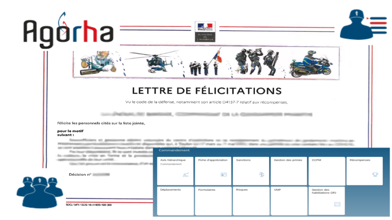

Section d'administration des personnels

Missions :
Ce service est dédié à la gestion des ressources humaine (RH). Il a en charge environ 300 personnels, Il gère : - Les stages, - Les mutations, - Les promotions, - La chancellerie (félicitations, punitions...), - Les notations.
Moyens :
- Divers : Informatique (ordinateurs, logiciels...).
Effectifs :
- 2 personnels : 2 Sous-officiers.